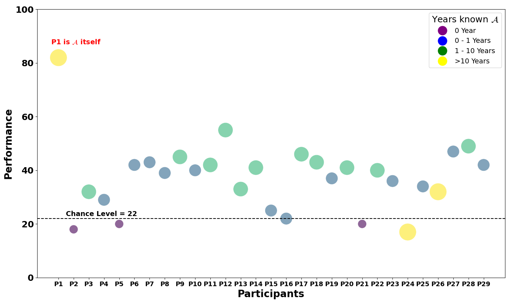
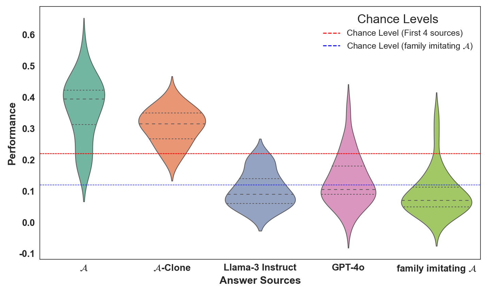
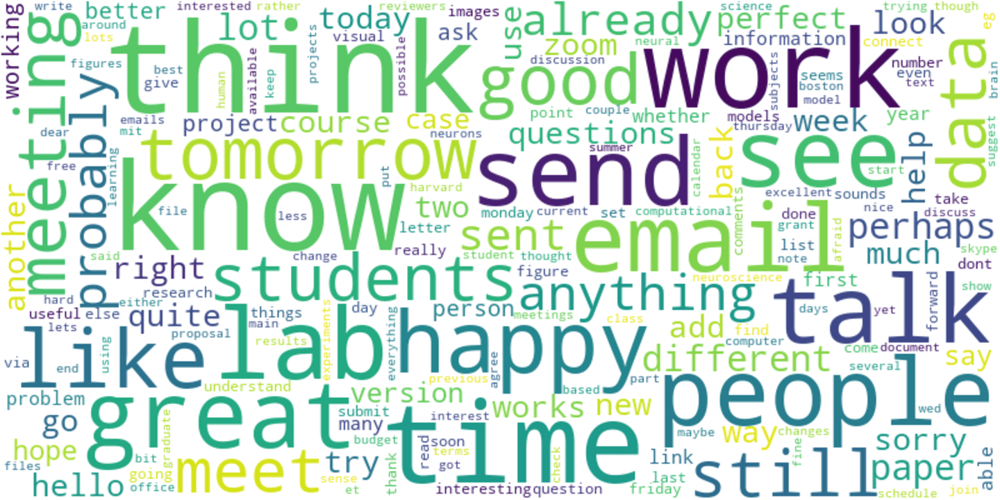

First image description.

Second image description.

Third image description.

Large language models (LLMs) have demonstrated remarkable abilities in a wide variety of generic tasks. Here we investigate whether it is possible to use LLMs to partially replicate cognitive aspects of an individual by fine-tuning an LLM with personal data. Our model, A-clone, built on the pretrained Llama-3-70B, was fine-tuned with a private English dataset from one volunteer referred to as A throughout. We evaluated A-clone in two ways. First, using 701 open-ended questions, we gathered responses from A, A-clone, other LLMs, and A's family members imitating A. We conducted a Turing-like test where 31 participants with varying degrees of familiarity with A attempted to identify A's real answers in a question-and-answer task. Human participants identified the genuine responses from A 55% ± 7% of the time, just over chance levels. A-clone outperformed all other baselines in mimicking adequate responses from A. Second, we compared the outputs of A-Clone with the ground truth from A in 10 psychological, moral, career, political tendency, and general knowledge tests, containing 484 questions altogether. A-Clone demonstrated a strong correlation with A's responses. This work provides an initial, proof-of-principle, evaluation of the possibility of mimicking the responses of an individual, opening doors to many real-world applications but also raising potential privacy and safety concerns about digital clones.



BibTex Code Here